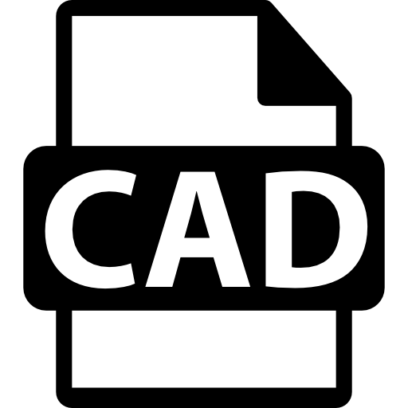

Skills
-
Progamacion en html
-
Mi conocimiento de este lenguaje no era tan comun para mi, ya que mientras
cursaba mi carrera en mecatronica vi una prqueña introduccion, hasta ahora con el curso que me a ayudado
a familiarisarme al punto de que ahora puedo decir que tengo un conocimento solido.
-
Progamacion en CSS

-
Podria poner lo anterior pero seria mentira, sicneramente no coocia este programa pero la verdad no fue
dificil de aprender ya que el curso de One Oracle de Alura es muy efectivo, ahora se que todavia me falta mucho por
aprender pero hasta ahora lo que llevo creo que emepce con una base bastante solida, espero que en un futuro esto
se pudea comprobar.
-
Progamacion en JavaScript

-
Al igual que el HTML este programa ya lo conocia, pero con la difenecia de que tengo mas conociminetos en logica de programacion
ya que mi base fue el C++, por mi carrera en ingenieria mecatronica este programa es muy parecido, no pudeo decir que lo domino pero
con el conocimineto que ya poseo se pude decir que me defiendo.
-
Progamacion en PLC

-
Los PLC practicamente es como un arduino pero industrial, tambien que tienen diferentes maneras de programar ya se usando
el lengueaje escalera, por bloques o AWL pero de esos 3 el que mejor domino es por bloques, tambine el de escalera es bastante facil
desfortunamanete mi experiencia de trabajar con estos apratos se limita a mis practicas de laboratorio, pero no estoy peleado con la
idea de tomar un empleo para incrementar mi experiencia en PLC.
-
Progamacion en CAD
-
A diferencia de mis otras habilidades esta si la he usado en el mundo laboral ya que mientras trabajaba en la empreza Toldos Pastor
de Mexico sa de cv, aqui realice bastantes planos tanto de peizas como de ensambles los progrmas que utilice fueron SolidWorks, AutoCAD y NX de SIEMENS pero
el progrma que domino mas es SolidWorks ya tengo mas de 6 años conociendolo y usandolo.
-
Progamacion en C++
-
El mundo de la programacion que conozco inicio con este lenguaje, mi primer "hola mundo" hasta mi proyecto final de universidad
con un Microcontrolador, este lenguje lo conozco desde hace mas de 9 años, pero siendo sinceros no lo uso tanto como quisera o como
otras habilidades que casi siempre estoy mejorando.
Hobbies
-
Impresion 3D

-
Es extraño como este hobbie lo epmece a realizar, ya que yo no tenia una impresora 3D pero gracias a una amistad consegui una
ANYCUBIC Kossel es una impresora 3D tipo delta, consta de 3 rieles verticales acomodados en forma triangular, el extrusor esta suspendido por
por unos brazos que van a un riel correspondiente a cada eje, son nombrados "x" "y" "z" pero no son los ejes normales de direccion solo son
sus identificadores, bueno este pasatiempo poco a poco lo he ido dominando y tambien me ha permitido mejorar mi habilidad con solidworks
pero tambine otro hobbie el hacer modelos 3D en Blender
-
Modelar en 3D

-
Gracias al haber trabajado he podido comprar un curso de Blender en Udemy y he podido aprender otro software de diseño, nada mas que
este esta enfocado a la animacion y creacion de vidojuegos o productos multidmedia, me facino demasiod este programa ya que con la impresion 3D
pduedo hacer piezas de todo tipo.
-
Videojuegos
-
Que pudeo decir este pasatiempo ha sido mi pasion desde los 4 años desde el NES con el Contra y el Duck hunt hasta ahorita con el Xbox Seires x
con Baldurs gate y red dead redemption 2, los videojuegos cada vez cuentan historias mas interesantes y commplejas se que generacion tras generacion
ven avances y hay personas que les a tocado el avance de muchas tecnologias que talvez nunca imaginaron pero yo si puedo decir que yo he vivido el avance en los
videojuegos y ha sido todo un vieje y una experiencia gratificante, me gustan casi todos los generos esepto los de peleas, solo ne le unico juego de
peleas que no doy pena es el Bloody Roar 2 del PS1.
-
Pliculas

-
Al igual que los videojuegos este pasatempo lo disfruto desde hace mucho tiempo mi papa me introdujo en este mundo con StarWars,Indiana Jones al igual que mi
mama con Tremors, Starship Troopers y pues entre los dos son cinefilos, desfortunadamente no recientemente no he podido disfrutar de este pasatiempo al menos de
ir al cine, pero lo desquito con las plataformas de streaming, obvio tambien soy de ver series
-
Cocinar

-
El cocinar a sido una revelacion para mi ya que se me hace bastente facinante como el juntar ciertos ingredientes se pudea hacer
platillos deliciosos, ademas que practicamente es lo mas parecido ha hacer pocionoes magicas o hacer un ritual magico pero obvio eso no es
real pero el cocinar si, he encontrado que da mucha satisfaccion el lograr hacer una receta
-
Lectura
-
Ultimamente no he tenido tiempo de seguir este hobbie, para mi nunca fue aburrido el leer pero descubri que al leer un libro y luego verdad
la pelicula (si esque hacen una adaptacion) el libro es mejor, pero ultmamente he tenido es espinita de leer los libros a pesar de que talvez
ya no me gusten las peliculas.